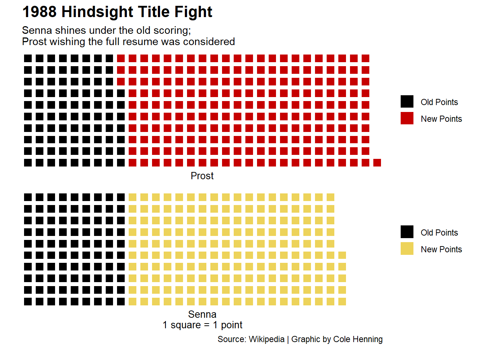

Formula 1 has seen 15 different scoring systems over the course of 70 years. The 1991 season was the first to have all races count towards the championship and 2010 saw a significant shakeup of point values and distribution. These changes have completely changed the sport, making teams focus more on reliability and consistency.
Retroactively applying the current scoring system yields some interesting results. One driver stands out more than any other. That driver is Alain Prost. The current scoring system would add three more championships to his name for a total of seven world championship titles, a record that would go unmatched until 2020 by Lewis Hamilton.
The results speak volumes for the ability and excellence Prost has shown as a driver and the heartbreaking fashion he has lost titles.
The 80s scoring system only counted a driver’s top 11 placed finishes despite 16 races being held a season. The system also awarded on a 9–6–4–3–2–1 basis to the first six finishers in each race. Current scoring counts all races and awards the top 10 drivers on a 25-18-15-12-10-8-6-4-2-1 basis.
First we will look at the 1983 season. Where Prost came two points shy of winning the title under the scoring of the time.
The next season Prost found himself in an all too similar scenario losing out on the championship with an even smaller margin of defeat of half a point. Despite finishing with two more wins than rival Nika Lauda.
After two heartbreaking championship battles, Prost managed to win two in a row. Shortly after he would lose by three points in 1988 to teammate Aryton Senna. In a season where Prost finished first or second in every race he completed he lost the championship. As Senna secured one more win than Prost to put him over the edge.
Code
eightyeight <- resultsfinal %>%filter(year ==1988) %>%group_by(name)eightyeightsummary <- eightyeight %>%group_by(name) %>%summarise(totalpoints =sum(points),totalnewpoints =sum(newpoints) )prost <-c("Old Points"=87, "New Points"=214)senna <-c("Old Points"=90, "New Points"=185, 26)iron(waffle(prost, rows =10, xlab="Prost", colors =c("black", "#c60000"))+labs(title="1988 Hindsight Title Fight", subtitle="Senna shines under the old scoring;Prost wishing the full resume was considered") +theme(plot.title =element_text(size =16, face ="bold"),axis.title =element_text(size =10),axis.title.y =element_blank() ),waffle(senna, rows =10, xlab="Senna\n1 square = 1 point", colors =c("black", "#EDD35A", "white"))+labs(caption="Source: Wikipedia | Graphic by Cole Henning"))

While the past can’t be changed, Prost’s career is one filled with what-ifs. He made a living and won four championships off of his consistently elite driving. The scoring system of the time truly fails to show his ability as a driver.
After looking at these results I can’t help but wonder that if the current point system had been in place, would we be talking about Prost in the same conversations as Michael Schumacher and Lewis Hamilton